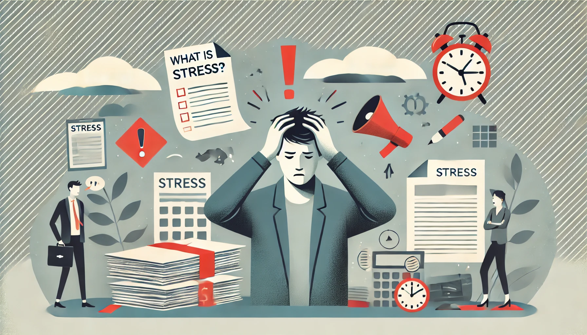

Apa itu Pengertian Stress?

Stress merupakan keadaan yang disebabkan dengan adanya sebuah tuntutan internal maupun eksternal ( stimulus ) yang mengancam, mengganggu, atau melebihi kemampuan individu akan bereaksi baik biologis, psikologis atau sitem individu dalam menanganinya ( Hariyanto et.al 2014 ).
Penyebab Stress pada Remaja:
- Masalah pelajaran sekolah.
- Masalah teman dekat / pacar.
- Masalah hubungan dengan orangtua.
Tips mengatasi Stress pada Remaja:
- Berbicara dengan orang yang kita percaya.
- Meminta bantuan agar tidak menghadapi sesuatu sendirian.
- Relaksasi nafas dalam, tindakan ini dapat menurunkan tingkat stress seseorang.
Penatalaksanaan:
- Terapi musik.
- Terapi butterfly hug.
- Terapi mindfullnes.
- Terapi relaksasi nafas dalam.